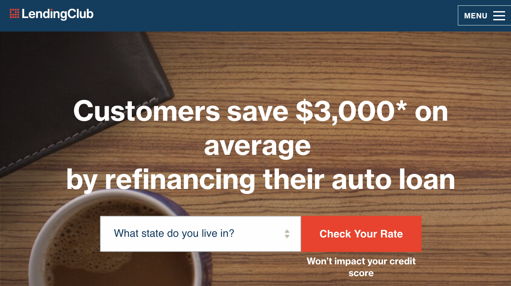
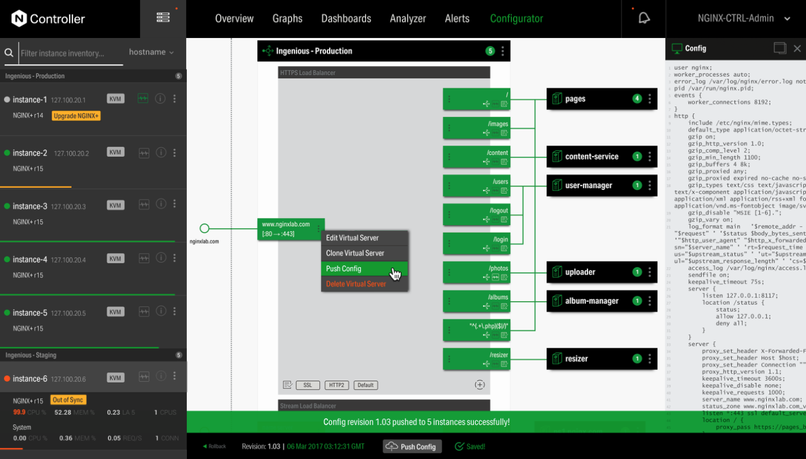
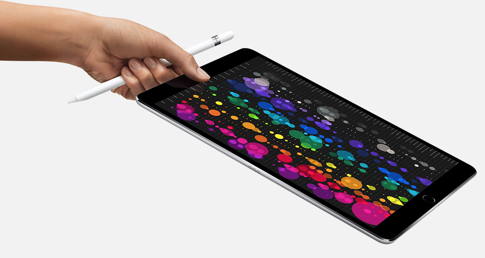
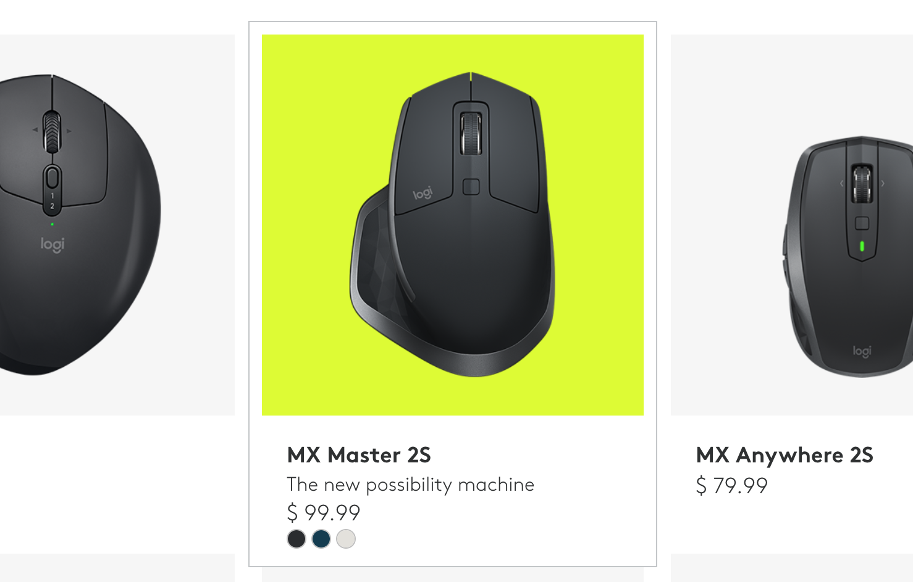
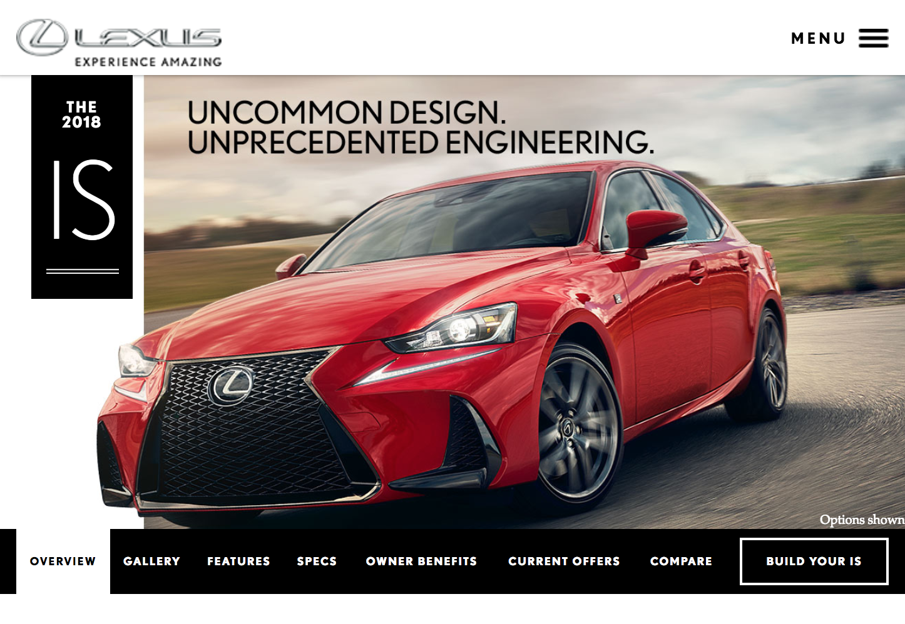

Work
LendingClub
Developed A/B tests with Optimizely and Heap analytics for product KPIs. Implemented Cypress for QA automation. Managed new hires and an off-shore team in Columbia. Tech stack included Node.js, Webpack, React, Redux, Cypress, Swagger APIs. 
NGINX
Coded web applications and tools for enterprise NGINX accounts. Primarily worked on the Controller project, a centralized monitoring and management platform for NGINX Plus. A single interface to manage multiple NGINX Plus instances. Tech stack included Node.js, React, Relay, GraphQL, PostgreSQL, Webpack, and Bootstrap.
Apple Inc.
Developed the flagship marketing pages for Apple Ipad Pro & Apple Music. They featured parallax scrolling, animations, and responsive layout. Tech stack was only vanilla javascript and proprietary libraries with custom design elements.
Huge
Redesign of Logitech’s Home, Compare, and PDP pages. Developed using a module-based system that flexed seamlessly across screen sizes and presented a consistent experience for the user. Unique aspects of the new design included parallax, scroll jacking, CSS3 transitions, deep linking, and product filtering. Tech Stack: Browserify, Gulp, Node, Handlebars, JSON, AJAX, and Jenkins.
Huge rebuilt Lexus.com using a service-oriented architecture based on cutting-edge open source software standards. Rich product information, engaging branding, regionalized content, and streamlined navigation were the guiding principles of the new site strategy. Even complex user interactions, like comparing models, configuring a car, and finding a dealer can be completed regardless of device due to the site's responsive design, which provides users with an application-like experience. Built in less than 7 months using lean platforms, Scrum, BDD, TDD and CI. Tech Stack: Java, Spring, Hibernate,Teamsite, MySQL, REST, Cucumber, Selenium, Transactions with AWS (EC2) and Solaris server.
Built a two page credit card comparison flow for American Express. Used HTML5, CSS3, jQuery, Cookies, Sessions and AJAX. Made for mobile IOS/Android.
Constructed a gamification web-app for the National Geographic Brain Games show. Used HTML5, CSS3, jQuery, and AJAX. Social integration with Twitter and Facebook connect. Built for tablet and browsers FF 3.6+, IE8+, Safari, Chrome.
Created a cell phone comparison tool for C Spire. Used HTML5,CSS3 animations, jQuery, jQuery ui, and json. Built for tablet and browsers FF 3.6+, IE8+, Safari, Chrome.
Developed a pet insurance quote flow for VPI. Implemented custom inputs form fields, sitcky divs, CSS3, HTML5, and jQuery. Built for a browser based experience only, FF 3.6+, IE7+, Safari, Chrome.
Full website platform redesign for Maybelline. Migrated maybelline.com to a more easily updatable CMS. Used Ruby, Middleman, HAML, and SASS to transfer and reconstruct pages.
Developed the travel booking sections for Celebrity Cruises. Used Ruby, Middleman, HAML, SASS, and jQuery. Built for browsers FF 3.6+, IE7+, Safari, Chrome.
Constructed a web application of three finnancial lessons informing users about cashflow and loan debts for ASA. Used Back-bone, High-charts.js, CSS3, HTML5, and jQuery. Built for browsers FF 3.6+, IE8+, Safari, Chrome.
Website reskin and re-design, including creating loan and interest calculators for General Electric. Used jQuery, HTML5, CSS, and SVN. Built for browsers FF 3.6+, IE7+, Safari, Chrome.